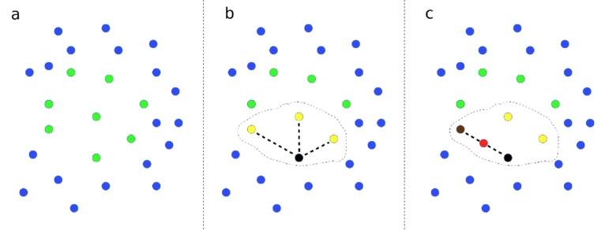

Creating synthetic Titanic passenger data with SMOTE¶
Synthetic data may be useful to share when it is not possible to share original data.
Here we use original Titanic passenger data to create new synthetic passenger data. We then train a logistic model on that synthetic data and test on real data that was not used to create the synthetic data.
Description of SMOTE¶
SMOTE stands for Synthetic Minority Oversampling Technique [1]. SMOTE is more commonly used to create additional data to enhance modelling fitting, especially when one or more classes have low prevalence in the data set. Hence the description of oversampling.
SMOTE works by finding near-neighbor points in the original data, and creating new data points from interpolating between two near-neighbor points.
Here we remove the real data used to create the synthetic data, leaving only the synthetic data. After generating synthetic data we remove any data points that, by chance, are identical to original real data points, and also remove 10% of points that are closest to the original data points. We measure ‘closeness’ by the Cartesian distance between standardised data values.

Demonstration of SMOTE method. (a) Data points with two features (shown on x and y axes) are represented. Points are colour-coded by class label. (b) A data point from a class is picked at random, shown by the black point, and then the closest neighbours of the same class are identified, as shown by yellow points. Here we show 3 closest neighbours, but the default in the SMOTE Imbalanced-Learn library is 6. One of those near-neighbour points is selected at random (shown by the second black point). A new data point, shown in red, is created at a random distance between the two selected data points.
Handling integer, binary, and categorical data¶
The standard SMOTE method generates floating point non-integer) values between data points. There are alternative ways of handing integer, binary, and categorical data using the SMOTE method. Here the methods we use are:
Integer values: Round the resulting synthetic data point value to the closest integer.
Binary: Code the value as 0 or 1, and round the resulting synthetic data point value to the closest integer (0 or 1).
Categorical: One-hot encode the categorical feature. Generate the synthetic data for each category value. Identify the category with the highest value and set to 1 while setting all others to 0.
Implementation with IMBLEARN¶
Here use the implementation in the IMBLEARN IMBALANCED-LEARN [2]
[1] Chawla, N.V., Bowyer, K.W., Hall, L.O., Kegelmeyer, W.P. “SMOTE: Synthetic minority over-sampling technique,” Journal of Artificial Intelligence Research, vol. 16, pp. 321-357, 2002.
[2] Lemaitre, G., Nogueira, F. and Aridas, C. (2016), Imbalanced-learn: A Python Toolbox to Tackle the Curse of Imbalanced Datasets in Machine Learning. arXiv:1609.06570 (https://pypi.org/project/imbalanced-learn/, pip install imbalanced-learn).
Overview of code sections¶
Below is an outline of this notebook.
Load packages
Load and process data
Load data
Divide into X (features) and y (labels)
Divide into training and test sets
Standardise data
Fit and test logistic regression model on real data
Fit model
Predict values
Calculate accuracy
Make Synthetic data
Function to create synthetic data
Generate raw synthetic data
Processing of raw synthetic data
Prepare lists of categorical, integer, and binary features
Function to process raw synthetic categorical data to one-hot encoded
Process raw synthetic data
Remove synthetic data that is a duplication of original data or close to original data
Remove identical points
Remove closest points to original data
Show five examples with their closest data points in the original data
Sample from synthetic data to get same size/balance as the original data
Examine distances between synthetic-real and real-real near neighbours
Comparison of real and synthetic data
Test synthetic data for training a logistic regression model
Fit model using synthetic data and check accuracy
Receiver Operator Characteristic curves
Load packages¶
import matplotlib.pyplot as plt
import numpy as np
import pandas as pd
# Import machine learning methods
from sklearn.linear_model import LogisticRegression
from sklearn.model_selection import train_test_split
from sklearn.preprocessing import StandardScaler
from sklearn.metrics import auc
from sklearn.metrics import roc_curve
from sklearn.neighbors import NearestNeighbors
# Import package for SMOTE
import imblearn
# Turn warnings off to keep notebook clean
import warnings
warnings.filterwarnings("ignore")
Load and process data¶
Load data¶
The section below downloads pre-processed data, and saves it to a subfolder (from where this code is run). If data has already been downloaded that cell may be skipped.
Code that was used to pre-process the data ready for machine learning may be found at: https://michaelallen1966.github.io/titanic/01_preprocessing.html
download_required = True
if download_required:
# Download processed data:
address = 'https://raw.githubusercontent.com/MichaelAllen1966/' + \
'1804_python_healthcare/master/titanic/data/processed_data.csv'
data = pd.read_csv(address)
# Create a data subfolder if one does not already exist
import os
data_directory ='./data/'
if not os.path.exists(data_directory):
os.makedirs(data_directory)
# Save data
data.to_csv(data_directory + 'processed_data.csv', index=False)
data = pd.read_csv('data/processed_data.csv')
# Make all data 'float' type and drop Passenger ID
data = data.astype(float)
data.drop('PassengerId', axis=1, inplace=True) # Remove passenger ID
# Record number in each class
number_died = np.sum(data['Survived'] == 0)
number_survived = np.sum(data['Survived'] == 1)
Divide into X (features) and y (labels)¶
X = data.drop('Survived',axis=1) # X = all 'data' except the 'survived' column
y = data['Survived'] # y = 'survived' column from 'data'
Divide into training and test sets¶
To demonstrate the method we will use a single train/test split for simplicity.
X_train, X_test, y_train, y_test = train_test_split(X, y, test_size = 0.25)
Show examples from the training data.
X_train.head()
| Pclass | Age | SibSp | Parch | Fare | AgeImputed | EmbarkedImputed | CabinLetterImputed | CabinNumber | CabinNumberImputed | ... | Embarked_missing | CabinLetter_A | CabinLetter_B | CabinLetter_C | CabinLetter_D | CabinLetter_E | CabinLetter_F | CabinLetter_G | CabinLetter_T | CabinLetter_missing | |
|---|---|---|---|---|---|---|---|---|---|---|---|---|---|---|---|---|---|---|---|---|---|
| 612 | 3.0 | 28.0 | 1.0 | 0.0 | 15.5000 | 1.0 | 0.0 | 1.0 | 0.0 | 1.0 | ... | 0.0 | 0.0 | 0.0 | 0.0 | 0.0 | 0.0 | 0.0 | 0.0 | 0.0 | 1.0 |
| 118 | 1.0 | 24.0 | 0.0 | 1.0 | 247.5208 | 0.0 | 0.0 | 0.0 | 58.0 | 0.0 | ... | 0.0 | 0.0 | 1.0 | 0.0 | 0.0 | 0.0 | 0.0 | 0.0 | 0.0 | 0.0 |
| 707 | 1.0 | 42.0 | 0.0 | 0.0 | 26.2875 | 0.0 | 0.0 | 0.0 | 24.0 | 0.0 | ... | 0.0 | 0.0 | 0.0 | 0.0 | 0.0 | 1.0 | 0.0 | 0.0 | 0.0 | 0.0 |
| 888 | 3.0 | 28.0 | 1.0 | 2.0 | 23.4500 | 1.0 | 0.0 | 1.0 | 0.0 | 1.0 | ... | 0.0 | 0.0 | 0.0 | 0.0 | 0.0 | 0.0 | 0.0 | 0.0 | 0.0 | 1.0 |
| 204 | 3.0 | 18.0 | 0.0 | 0.0 | 8.0500 | 0.0 | 0.0 | 1.0 | 0.0 | 1.0 | ... | 0.0 | 0.0 | 0.0 | 0.0 | 0.0 | 0.0 | 0.0 | 0.0 | 0.0 | 1.0 |
5 rows × 24 columns
Standardise data¶
To standardise the data we subtract the mean of the training set values, and divide by the standard deviation of the training data. Note that the mean and standard deviation of the training data are used to standardise the test set data as well. Here we use sklearn’s StandardScaler method.
def standardise_data(X_train, X_test):
# Initialise a new scaling object for normalising input data
sc = StandardScaler()
# Set up the scaler just on the training set
sc.fit(X_train)
# Apply the scaler to the training and test sets
train_std=sc.transform(X_train)
test_std=sc.transform(X_test)
return train_std, test_std
X_train_std, X_test_std = standardise_data(X_train, X_test)
Fit and test logistic regression model on real data¶
Fit model¶
We will fit a logistic regression model, using sklearn’s LogisticRegression method.
model = LogisticRegression()
model.fit(X_train_std,y_train)
LogisticRegression()
Predict values¶
Now we can use the trained model to predict survival. We will test the accuracy of both the training and test data sets.
# Predict training and test set labels
y_pred_train = model.predict(X_train_std)
y_pred_test = model.predict(X_test_std)
Calculate accuracy¶
Here we measure accuracy simply as the proportion of passengers where we make the correct prediction (later we will use Receiver Operator Characteristic curves for a more thorough analysis).
accuracy_train = np.mean(y_pred_train == y_train)
accuracy_test = np.mean(y_pred_test == y_test)
print (f'Accuracy of predicting training data = {accuracy_train:0.3f}')
print (f'Accuracy of predicting test data = {accuracy_test:0.3f}')
Accuracy of predicting training data = 0.828
Accuracy of predicting test data = 0.758
Make Synthetic data¶
Function to create synthetic data¶
This function is to make synethetic data for two classes.
def make_synthetic_data_smote(X, y, number_of_samples=[1000,1000]):
"""
Synthetic data generation for two classes.
Inputs
------
original_data: X, y numpy arrays (y should have label 0 and 1)
number_of_samples: number of samples to generate (list for y=0, y=1)
Returns
-------
X_synthetic: NumPy array
y_synthetic: NumPy array
"""
from imblearn.over_sampling import SMOTE
# Count instances in each class
count_label_0 = np.sum(y==0)
count_label_1 = np.sum(y==1)
# SMOTE requires final class counts; add current counts to required counts
n_class_0 = number_of_samples[0] + count_label_0
n_class_1 = number_of_samples[1] + count_label_1
# Get SMOTE points
X_resampled, y_resampled = SMOTE(
sampling_strategy = {0:n_class_0, 1:n_class_1}).fit_resample(X, y)
# Get just the additional (synethetic) data points
X_synthetic = X_resampled[len(X):]
y_synthetic = y_resampled[len(y):]
return X_synthetic, y_synthetic
We will generate twice as much raw synthetic data for each class as the current data has. This will allow us to remove points that are identical to, or close to, original data.
Generate raw synthetic data¶
# Get counts fo classes from y_train
unique, original_frequency = np.unique(y_train, return_counts = True)
required_smote_count = list(original_frequency * 2)
X_synthetic, y_synthetic = make_synthetic_data_smote(
X_train, y_train, number_of_samples=required_smote_count)
Processing of raw synthetic data¶
Prepare lists of categorical, integer, and binary features¶
These lists will be used to process raw syenthetic data to the appropriate data type.
# Get full list of column names
X_col_names = list(X_train)
# Set categorical one-hots cols using common prefix
categorical = ['Embarked_', 'CabinLetter_']
one_hot_cols = []
for col in categorical:
one_hot_cols.append([x for x in X_col_names if x[0:len(col)] == col])
# Set integer columns
integer_cols = ['Pclass',
'Age',
'Parch',
'Fare',
'SibSp',
'CabinNumber']
# Set binary columns
binary_cols = ['male',
'AgeImputed',
'EmbarkedImputed',
'CabinNumberImputed']
Function to process raw synthetic categorical data to one-hot encoded¶
Sets highest value to 1 and all others to 0.
def make_one_hot(x):
"""
Takes a list/array/series and returns 1 for highest value and 0 for all
others
"""
# Get argmax
highest = np.argmax(x)
# Set all values to zero
x *= 0.0
# Set argmax to one
x[highest] = 1.0
return x
Process raw synthetic data:¶
Transfer data to a DataFrame and add column names
Process one-hot categorical data fields
Process integer data fields
Process binary data fields
Add y data with label
Shuffle data
# Set y_label
y_label = 'Survived'
# Create a data frame with id
synth_df = pd.DataFrame()
# Transfer X values to DataFrame
synth_df=pd.concat([synth_df,
pd.DataFrame(X_synthetic, columns=X_col_names)],
axis=1)
# Make one hot as necessary
for one_hot_list in one_hot_cols:
for index, row in synth_df.iterrows():
x = row[one_hot_list]
x_one_hot = make_one_hot(x)
row[x_one_hot.index]= x_one_hot.values
# Make integer as necessary
for col in integer_cols:
synth_df[col] = synth_df[col].round(0)
# Round and clip binary cols
for col in binary_cols:
synth_df[col] = synth_df[col].round(0)
synth_df[col] = np.clip(synth_df[col],0,1)
# Add y data with a label
y_list = list(y_synthetic)
synth_df[y_label] = y_list
# Shuffle data
synth_df = synth_df.sample(frac=1.0)
Show sample of synethetic data
synth_df.head()
| Pclass | Age | SibSp | Parch | Fare | AgeImputed | EmbarkedImputed | CabinLetterImputed | CabinNumber | CabinNumberImputed | ... | CabinLetter_A | CabinLetter_B | CabinLetter_C | CabinLetter_D | CabinLetter_E | CabinLetter_F | CabinLetter_G | CabinLetter_T | CabinLetter_missing | Survived | |
|---|---|---|---|---|---|---|---|---|---|---|---|---|---|---|---|---|---|---|---|---|---|
| 1008 | 2.0 | 19.0 | 0.0 | 0.0 | 11.0 | 0.0 | 0.0 | 1.0 | 0.0 | 1.0 | ... | 0.0 | 0.0 | 0.0 | 0.0 | 0.0 | 0.0 | 0.0 | 0.0 | 1.0 | 0.0 |
| 1549 | 1.0 | 32.0 | 1.0 | 1.0 | 436.0 | 0.0 | 0.0 | 0.0 | 42.0 | 0.0 | ... | 0.0 | 1.0 | 0.0 | 0.0 | 0.0 | 0.0 | 0.0 | 0.0 | 0.0 | 1.0 |
| 1096 | 1.0 | 43.0 | 1.0 | 0.0 | 67.0 | 0.0 | 0.0 | 0.0 | 36.0 | 0.0 | ... | 0.0 | 0.0 | 0.0 | 0.0 | 1.0 | 0.0 | 0.0 | 0.0 | 0.0 | 0.0 |
| 1162 | 3.0 | 20.0 | 0.0 | 0.0 | 9.0 | 0.0 | 0.0 | 1.0 | 0.0 | 1.0 | ... | 0.0 | 0.0 | 0.0 | 0.0 | 0.0 | 0.0 | 0.0 | 0.0 | 1.0 | 0.0 |
| 1435 | 3.0 | 47.0 | 0.0 | 0.0 | 8.0 | 0.0 | 0.0 | 1.0 | 0.0 | 1.0 | ... | 0.0 | 0.0 | 0.0 | 0.0 | 0.0 | 0.0 | 0.0 | 0.0 | 1.0 | 0.0 |
5 rows × 25 columns
Remove synthetic data that is a duplication of original data or close to original data¶
For each synethetic data point find nearest neighbour in the real data set (based on Cartesian distance of standardised data)
# Standardise synthetic data (based on real training data)
X_train_std, X_synth_std = standardise_data(X_train, X_synthetic)
# Get all real X data (combine standardised training + test data)
X_real_std = np.concatenate([X_train_std, X_test_std], axis=0)
# Use ScitLearn neighbors.NearestNeighbors to get nearest neighbour
from sklearn.neighbors import NearestNeighbors
nn = NearestNeighbors(n_neighbors=1, algorithm='auto').fit(X_real_std)
dists, idxs = nn.kneighbors(X_synth_std)
# Store in synthetic data DataFrame
synth_df['distance_to_closest_real'] = list(dists.flatten())
synth_df['closest_X_real_row_index'] = list(idxs.flatten())
synth_df
| Pclass | Age | SibSp | Parch | Fare | AgeImputed | EmbarkedImputed | CabinLetterImputed | CabinNumber | CabinNumberImputed | ... | CabinLetter_C | CabinLetter_D | CabinLetter_E | CabinLetter_F | CabinLetter_G | CabinLetter_T | CabinLetter_missing | Survived | distance_to_closest_real | closest_X_real_row_index | |
|---|---|---|---|---|---|---|---|---|---|---|---|---|---|---|---|---|---|---|---|---|---|
| 1008 | 2.0 | 19.0 | 0.0 | 0.0 | 11.0 | 0.0 | 0.0 | 1.0 | 0.0 | 1.0 | ... | 0.0 | 0.0 | 0.0 | 0.0 | 0.0 | 0.0 | 1.0 | 0.0 | 0.000000 | 353 |
| 1549 | 1.0 | 32.0 | 1.0 | 1.0 | 436.0 | 0.0 | 0.0 | 0.0 | 42.0 | 0.0 | ... | 0.0 | 0.0 | 0.0 | 0.0 | 0.0 | 0.0 | 0.0 | 1.0 | 0.000000 | 21 |
| 1096 | 1.0 | 43.0 | 1.0 | 0.0 | 67.0 | 0.0 | 0.0 | 0.0 | 36.0 | 0.0 | ... | 0.0 | 0.0 | 1.0 | 0.0 | 0.0 | 0.0 | 0.0 | 0.0 | 1.240925 | 164 |
| 1162 | 3.0 | 20.0 | 0.0 | 0.0 | 9.0 | 0.0 | 0.0 | 1.0 | 0.0 | 1.0 | ... | 0.0 | 0.0 | 0.0 | 0.0 | 0.0 | 0.0 | 1.0 | 0.0 | 0.000060 | 692 |
| 1435 | 3.0 | 47.0 | 0.0 | 0.0 | 8.0 | 0.0 | 0.0 | 1.0 | 0.0 | 1.0 | ... | 0.0 | 0.0 | 0.0 | 0.0 | 0.0 | 0.0 | 1.0 | 0.0 | 0.315861 | 338 |
| ... | ... | ... | ... | ... | ... | ... | ... | ... | ... | ... | ... | ... | ... | ... | ... | ... | ... | ... | ... | ... | ... |
| 940 | 3.0 | 17.0 | 0.0 | 0.0 | 8.0 | 0.0 | 0.0 | 1.0 | 0.0 | 1.0 | ... | 0.0 | 0.0 | 0.0 | 0.0 | 0.0 | 0.0 | 1.0 | 0.0 | 3.098494 | 542 |
| 947 | 3.0 | 32.0 | 1.0 | 0.0 | 15.0 | 0.0 | 0.0 | 1.0 | 0.0 | 1.0 | ... | 0.0 | 0.0 | 0.0 | 0.0 | 0.0 | 0.0 | 1.0 | 0.0 | 1.755892 | 24 |
| 1770 | 1.0 | 33.0 | 1.0 | 0.0 | 47.0 | 0.0 | 0.0 | 0.0 | 119.0 | 0.0 | ... | 1.0 | 0.0 | 0.0 | 0.0 | 0.0 | 0.0 | 0.0 | 1.0 | 0.000115 | 558 |
| 1483 | 1.0 | 47.0 | 0.0 | 1.0 | 135.0 | 0.0 | 0.0 | 0.0 | 71.0 | 0.0 | ... | 1.0 | 0.0 | 0.0 | 0.0 | 0.0 | 0.0 | 0.0 | 0.0 | 1.934529 | 255 |
| 1014 | 3.0 | 26.0 | 0.0 | 0.0 | 8.0 | 0.0 | 0.0 | 1.0 | 0.0 | 1.0 | ... | 0.0 | 0.0 | 0.0 | 0.0 | 0.0 | 0.0 | 1.0 | 0.0 | 0.031457 | 474 |
1336 rows × 27 columns
Remove identical points¶
# Get points with zero distance to real (use distance of <0.01 as effectively identical)
identical = synth_df['distance_to_closest_real'] < 0.01
print (f'Proportion of data points identical to real data points = {identical.mean():0.3f}')
# Remove points with zero distance to real
mask = identical == False
synth_df = synth_df[mask]
Proportion of data points identical to real data points = 0.211
Remove closest points to original data¶
Remove 10% of points that are closest to original data
# Proportion of points to remove
proportion_to_remove = 0.1
# Sort by distance
synth_by_distance = synth_df.sort_values(
'distance_to_closest_real', ascending=False)
# Limit data
number_to_keep = int(len(synth_by_distance) * (1 - proportion_to_remove))
synth_by_distance = synth_by_distance.head(number_to_keep)
# Shuffle and store back in synth_df
synth_df = synth_by_distance.sample(frac=1)
Show five examples with their closest data points in the original data¶
# Reproduce X_real but with non-standardised values for comparison
X_real = np.concatenate([X_train, X_test], axis=0)
# Set up Data Frame for comparison
comparison = pd.DataFrame(index=X_col_names)
# Generate five examples
for i in range(5):
# Get synthetic data sample
sample = synth_df.sample(1)
comparison[f'Synthetic_{i+1}'] = sample[X_col_names].values[0]
# Get closest poitn from the real data
closest_id = sample['closest_X_real_row_index']
comparison[f'Synthetic_{i+1}_closest'] = X_real[closest_id, :][0]
# Display
comparison.round(0)
| Synthetic_1 | Synthetic_1_closest | Synthetic_2 | Synthetic_2_closest | Synthetic_3 | Synthetic_3_closest | Synthetic_4 | Synthetic_4_closest | Synthetic_5 | Synthetic_5_closest | |
|---|---|---|---|---|---|---|---|---|---|---|
| Pclass | 1.0 | 3.0 | 2.0 | 1.0 | 3.0 | 1.0 | 3.0 | 2.0 | 1.0 | 3.0 |
| Age | 27.0 | 16.0 | 35.0 | 28.0 | 39.0 | 17.0 | 12.0 | 44.0 | 36.0 | 28.0 |
| SibSp | 0.0 | 1.0 | 0.0 | 0.0 | 0.0 | 1.0 | 5.0 | 1.0 | 0.0 | 0.0 |
| Parch | 2.0 | 1.0 | 0.0 | 0.0 | 0.0 | 0.0 | 2.0 | 0.0 | 0.0 | 0.0 |
| Fare | 203.0 | 20.0 | 11.0 | 27.0 | 8.0 | 109.0 | 47.0 | 26.0 | 26.0 | 14.0 |
| AgeImputed | 0.0 | 0.0 | 0.0 | 1.0 | 0.0 | 0.0 | 0.0 | 0.0 | 0.0 | 1.0 |
| EmbarkedImputed | 0.0 | 0.0 | 0.0 | 0.0 | 0.0 | 0.0 | 0.0 | 0.0 | 0.0 | 0.0 |
| CabinLetterImputed | 0.0 | 1.0 | 1.0 | 1.0 | 1.0 | 0.0 | 1.0 | 1.0 | 0.0 | 1.0 |
| CabinNumber | 74.0 | 0.0 | 0.0 | 0.0 | 0.0 | 65.0 | 0.0 | 0.0 | 25.0 | 0.0 |
| CabinNumberImputed | 0.0 | 1.0 | 1.0 | 1.0 | 1.0 | 0.0 | 1.0 | 1.0 | 0.0 | 1.0 |
| male | 1.0 | 1.0 | 1.0 | 1.0 | 1.0 | 0.0 | 1.0 | 1.0 | 1.0 | 1.0 |
| Embarked_C | 1.0 | 0.0 | 0.0 | 0.0 | 0.0 | 1.0 | 0.0 | 0.0 | 0.0 | 0.0 |
| Embarked_Q | 0.0 | 0.0 | 0.0 | 0.0 | 0.0 | 0.0 | 0.0 | 0.0 | 0.0 | 0.0 |
| Embarked_S | 0.0 | 1.0 | 1.0 | 1.0 | 1.0 | 0.0 | 1.0 | 1.0 | 1.0 | 1.0 |
| Embarked_missing | 0.0 | 0.0 | 0.0 | 0.0 | 0.0 | 0.0 | 0.0 | 0.0 | 0.0 | 0.0 |
| CabinLetter_A | 0.0 | 0.0 | 0.0 | 0.0 | 0.0 | 0.0 | 0.0 | 0.0 | 0.0 | 0.0 |
| CabinLetter_B | 0.0 | 0.0 | 0.0 | 0.0 | 0.0 | 0.0 | 0.0 | 0.0 | 0.0 | 0.0 |
| CabinLetter_C | 1.0 | 0.0 | 0.0 | 0.0 | 0.0 | 1.0 | 0.0 | 0.0 | 0.0 | 0.0 |
| CabinLetter_D | 0.0 | 0.0 | 0.0 | 0.0 | 0.0 | 0.0 | 0.0 | 0.0 | 0.0 | 0.0 |
| CabinLetter_E | 0.0 | 0.0 | 0.0 | 0.0 | 0.0 | 0.0 | 0.0 | 0.0 | 1.0 | 0.0 |
| CabinLetter_F | 0.0 | 0.0 | 0.0 | 0.0 | 0.0 | 0.0 | 0.0 | 0.0 | 0.0 | 0.0 |
| CabinLetter_G | 0.0 | 0.0 | 0.0 | 0.0 | 0.0 | 0.0 | 0.0 | 0.0 | 0.0 | 0.0 |
| CabinLetter_T | 0.0 | 0.0 | 0.0 | 0.0 | 0.0 | 0.0 | 0.0 | 0.0 | 0.0 | 0.0 |
| CabinLetter_missing | 0.0 | 1.0 | 1.0 | 1.0 | 1.0 | 0.0 | 1.0 | 1.0 | 0.0 | 1.0 |
Sample from synthetic data to get same size/balance as the original data¶
mask = synth_df['Survived'] == 0
synth_died = synth_df[mask].sample(number_died)
mask = synth_df['Survived'] == 1
synth_survived = synth_df[mask].sample(number_survived)
# Reconstruct into synth_df and shuffle
synth_df = pd.concat([synth_died, synth_survived], axis=0)
synth_df = synth_df.sample(frac=1.0, )
Compare with original data
print ('Number of real data survived: ', np.sum(data['Survived'] == 1))
print ('Number of synthetic data survived: ', np.sum(synth_df['Survived'] == 1))
print ('Number of real data died: ', np.sum(data['Survived'] == 0))
print ('Number of synthetic data died: ', np.sum(synth_df['Survived'] == 0))
Number of real data survived: 342
Number of synthetic data survived: 342
Number of real data died: 549
Number of synthetic data died: 549
Examine distances between synthetic-real and real-real near neighbours¶
Distance are Cartesian distance between standardised data points.
# Get nearest neighbour distances in real data
nn = NearestNeighbors(n_neighbors=1, algorithm='auto').fit(X_real_std)
dists, idxs = nn.kneighbors()
dist_real_real = dists.flatten()
# Get closest real data point to synthetic data points
dist_synthetic_real = synth_df['distance_to_closest_real'].values
# Plot histogram of distances to nearest real data point
bins = np.arange(0, 5.1, 0.1)
fig = plt.figure(figsize=(6, 6))
ax = fig.add_subplot(111)
ax.hist(dist_real_real, bins=bins, histtype='step', color='b',
density=True, label='real-real')
ax.hist(dist_synthetic_real, bins=bins, histtype='step', color='r',
density=True, label='synthetic-real')
ax.set_xlabel('Distance to nearest neighbour')
ax.set_ylabel('Frequency density')
ax.legend()
plt.show()

Show general statistics
statistics = pd.DataFrame()
statistics['real-real data'] = pd.DataFrame(dist_real_real).describe()
statistics['real-synthetic data'] = pd.DataFrame(dist_synthetic_real).describe()
statistics
| real-real data | real-synthetic data | |
|---|---|---|
| count | 891.000000 | 891.000000 |
| mean | 0.561514 | 1.047574 |
| std | 1.170308 | 1.206917 |
| min | 0.000000 | 0.033606 |
| 25% | 0.001592 | 0.269491 |
| 50% | 0.152741 | 0.695202 |
| 75% | 0.906723 | 1.384847 |
| max | 26.081659 | 11.994999 |
Note: In this case the average distance from a synthetic data point to it’s nearest neighbour real data point is greater than the average distance from a real data point to it’s nearest neighbour real data point.
Show counts of where there are nearest neighbour in real data is identical to points in real data or synthetic data.
count = np.sum(dist_real_real <0.001)
print (f'Number of data points in real data with identical nearest neighbour: {count}')
count = np.sum(dist_synthetic_real <0.001)
print (f'Number of data points in synthetic data with identical real data nearest neighbour: {count}')
Number of data points in real data with identical nearest neighbour: 213
Number of data points in synthetic data with identical real data nearest neighbour: 0
Comparison of means and standard deviations of real and synthetic data¶
The charts below compare means and standard deviations of real and synthetic data, comparing passengers who survived or died separately.
fig = plt.figure(figsize=(9,9))
# Compare means of patients who died
ax1 = fig.add_subplot(221)
mask = data['Survived'] == 0
x = data[mask][X_col_names].mean()
mask = synth_df['Survived'] == 0
y = synth_df[mask][X_col_names].mean()
ax1.scatter(x,y, alpha=0.5)
ax1.plot([0.001, 100],[0.001,100], linestyle='--')
ax1.set_xscale('log')
ax1.set_yscale('log')
ax1.set_xlim(1e-3, 1e2)
ax1.set_ylim(1e-3, 1e2)
ax1.set_xlabel('Original data')
ax1.set_ylabel('Synthetic data')
ax1.set_title('Non-survivors mean')
ax1.grid()
# Compare means of patients who survived
ax2 = fig.add_subplot(222)
mask = data['Survived'] == 1
x = data[mask][X_col_names].mean()
mask = synth_df['Survived'] == 1
y = synth_df[mask][X_col_names].mean()
ax2.scatter(x,y, alpha=0.5)
ax2.plot([0.001, 100],[0.001,100], linestyle='--')
ax2.set_xscale('log')
ax2.set_yscale('log')
ax2.set_xlim(1e-3, 1e2)
ax2.set_ylim(1e-3, 1e2)
ax2.set_xlabel('Original data')
ax2.set_ylabel('Synthetic data')
ax2.set_title('Survivors mean')
ax2.grid()
# Compare stdevs of patients who died
ax3 = fig.add_subplot(223)
mask = data['Survived'] == 0
x = data[mask][X_col_names].std()
mask = synth_df['Survived'] == 0
y = synth_df[mask][X_col_names].std()
ax3.scatter(x,y, alpha=0.5)
ax3.plot([0.001, 100],[0.001,100], linestyle='--')
ax3.set_xscale('log')
ax3.set_yscale('log')
ax3.set_xlim(1e-2, 1e2)
ax3.set_ylim(1e-2, 1e2)
ax3.set_xlabel('Original data')
ax3.set_ylabel('Synthetic data')
ax3.set_title('Non-survivors StdDevs')
ax3.grid()
# Compare stdevs of patients who survived
ax4 = fig.add_subplot(224)
mask = data['Survived'] == 1
x = data[mask][X_col_names].std()
mask = synth_df['Survived'] == 1
y = synth_df[mask][X_col_names].std()
ax4.scatter(x,y, alpha=0.5)
ax4.plot([0.001, 100],[0.001,100], linestyle='--')
ax4.set_xscale('log')
ax4.set_yscale('log')
ax4.set_xlim(1e-2, 1e2)
ax4.set_ylim(1e-2, 1e2)
ax4.set_xlabel('Original data')
ax4.set_ylabel('Synthetic data')
ax4.set_title('Survivors StdDevs')
ax4.grid()
plt.tight_layout(pad=2)
plt.savefig('images/smote_correls.png', facecolor='w', dpi=300)
plt.show()

Test synthetic data for training a logistic regression model¶
Note that we create synethetic data using the training portion of our orginal train/test split. We then test the model on the original test data. The data used to create synthetic data is not present in the test data (this would cause leakage of test data into the training data and over-estimate performance).
Fit model using synthetic data and check accuracy¶
# Get X data and standardised
X_synth = synth_df[X_col_names]
y_synth = synth_df['Survived'].values
X_synth_std, X_test_std = standardise_data(X_synth, X_test)
# Fit model
model_synth = LogisticRegression()
model_synth.fit(X_synth_std,y_synth)
# Get predictions of test set
y_pred_test_synth = model_synth.predict(X_test_std)
# Report accuracy
accuracy_test_synth = np.mean(y_pred_test_synth == y_test)
print (f'Accuracy of predicting test data from model trained on real data = {accuracy_test:0.3f}')
print (f'Accuracy of predicting test data from model trained on synthetic data = {accuracy_test_synth:0.3f}')
Accuracy of predicting test data from model trained on real data = 0.758
Accuracy of predicting test data from model trained on synthetic data = 0.753
Receiver Operator Characteristic curves¶
y_probs = model.predict_proba(X_test_std)[:,1]
y_probs_synthetic = model_synth.predict_proba(X_test_std)[:,1]
fpr, tpr, thresholds = roc_curve(y_test, y_probs)
fpr_synth, tpr_synth, thresholds_synth = roc_curve(y_test, y_probs_synthetic)
roc_auc = auc(fpr, tpr)
roc_auc_snth = auc(fpr_synth, tpr_synth)
print (f'ROC AUC real training data: {roc_auc:0.2f}')
print (f'ROC AUC synthetic training data: {roc_auc_snth:0.2f}')
ROC AUC real training data: 0.79
ROC AUC synthetic training data: 0.78
fig = plt.figure(figsize=(6,6))
# Plot ROC
ax1 = fig.add_subplot()
ax1.plot([0, 1], [0, 1], color='darkblue', linestyle='--')
ax1.set_xlabel('False Positive Rate')
ax1.set_ylabel('True Positive Rate')
ax1.set_title('Titanic survival Receiver Operator Characteristic curve')
ax1.plot(fpr,tpr, color='green', label = 'Real training data')
ax1.plot(fpr_synth,tpr_synth, color='red', label = 'Synthetic training data')
text = f'Real data AUC: {roc_auc:.3f}\nSynthetic data AUC {roc_auc_snth:.3f}'
ax1.text(0.52,0.17, text,
bbox=dict(facecolor='white', edgecolor='black'))
plt.legend()
plt.grid(True)
plt.savefig('images/synthetic_roc.png')
plt.show()

Conclusions¶
Here we have used the SMOTE method to create synthetic data. We have removed any data points that are identical to the original data, and have also removed 10% of synthetic data points that are closest to original data.
Mean and standard deviations of the synthetic data are very similar to the original data.
Synthetic trains a logistic regression model with minimal loss of accuracy when compared with training with original data.